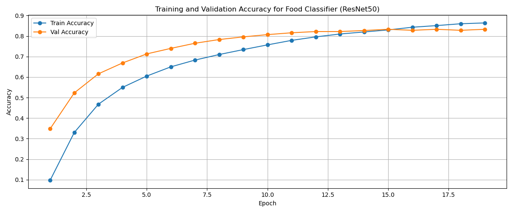
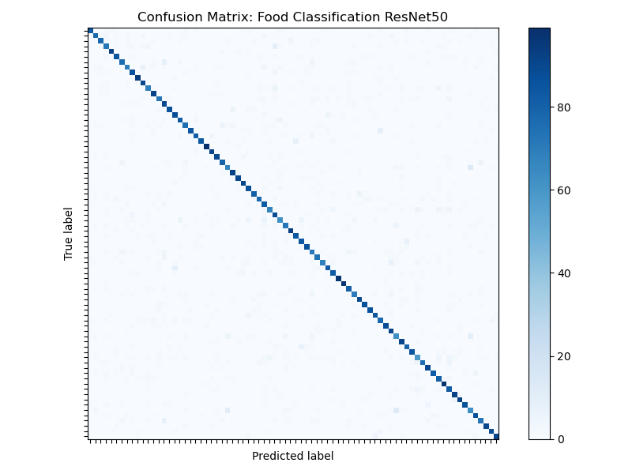

Food Classification Trainer Documentation
1. Overview
This is an overview of the food_classifier training pipeline, detailing the architecture, training loop, hyperparameter choices, and evaluation results.
2. Trainer Pipeline
The training script follows a modular structure:
- Device Setup: Automatically selects MPS (macOS), CUDA (NVIDIA GPU), or CPU.
- Data Preparation: Uses
torchvision.datasets.ImageFolderwith augmentations for training and standard transforms for validation/test. - Model Definition: Loads a pre-trained ResNet-50, replaces its final fully connected layer, and applies selective layer freezing.
- Optimizer & Scheduler: Utilizes
AdamWwith differential learning rates and aOneCycleLRscheduler. - Training Loop: Implements early stopping based on validation accuracy.
- Evaluation: Computes final test accuracy and generates a confusion matrix.
3. Design Choices
3.1 Pre-trained Backbone (ResNet-50)
model = models.resnet50(weights=ResNet50_Weights.IMAGENET1K_V2)
in_features = model.fc.in_features
model.fc = nn.Sequential(
nn.Dropout(0.5),
nn.Linear(in_features, 78)
)Why ResNet-50: It provides a good balance of depth and computational efficiency, leveraging residual connections to mitigate vanishing gradients. The pre-trained weights on ImageNet help the model generalize better on food images.
3.2 Layer Freezing & Gradual Unfreezing
# Freeze all except layer3, layer4, and fc
for name, param in model.named_parameters():
param.requires_grad = name.startswith(('layer3', 'layer4', 'fc'))
# After 10 epochs, unfreeze layer1 and layer2
if epoch == 10:
for name, p in model.named_parameters():
if name.startswith(('layer1', 'layer2')):
p.requires_grad = TrueReasoning:: Freezing earlier layers prevents overfitting and reduces computation in early stages; unfreezing later allows fine-tuning deeper features once the head has stabilized.
3.3 Data Augmentation
train_transform = transforms.Compose([
transforms.RandomRotation(30),
transforms.RandomHorizontalFlip(),
transforms.RandomResizedCrop(224, scale=(0.8, 1.0)),
transforms.ColorJitter(0.2, 0.2, 0.2, 0.1),
transforms.AutoAugment(transforms.AutoAugmentPolicy.IMAGENET),
transforms.ToTensor(),
transforms.Normalize(mean=[0.485, 0.456, 0.406],
std=[0.229, 0.224, 0.225]),
])Use:: Strong augmentation helps the model generalize across varying viewpoints, scales, and lighting conditions commonly found in food photography.
4. Training Results
4.1 Accuracy Curves

Analysis:
- The training accuracy steadily increases, reaching over 86% by epoch 20.
- Validation accuracy peaks at around 82.5% before plateauing, indicating good generalization and early stopping kicking in around epoch 15.
4.2 Confusion Matrix

Analysis:
- Most classes lie along the diagonal, showing high per-class accuracy.
- A few off-diagonal squares indicate confusion between a few classes. Probably foods with similar visual features.
- This insight can guide targeted augmentation or class rebalancing.
5. Conclusion
The entire model has a very solid foundation with a pre-trained ResNet-50 backbone, effective data augmentation, and a well-structured training loop. The results show promising accuracy and generalization capabilities, making it suitable for real-world food classification tasks.